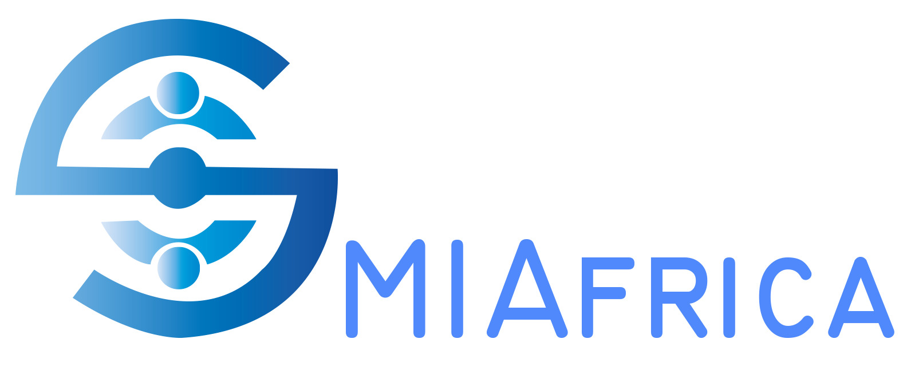

Login
Create and manage your content. Find your best match media and creators. Share your stories across Africa. Insights overview and impact measurement.

Publish your project

Receive proposals

Review and hire
Content production

Diffusion and monitoring
Smiafrica’s media database provides access to a vast network of verified and vetted media professionals, journalists, creators and production companies across Africa.
 Try it now
Try it now
If you want to learn more about Smiafrica please watch this video bellow.
A JaaS platform (Journalism As A Service): Solution based on Creator Economy model to Connects African journalists and influencers with companies, startups , cooperatives, NGOs and Public Sector.
We provide an easy-to-use platform that enables users, Create, share and Monetize Serious content across African & Mena Market.
It also includes artificial Intelligence Tools and media monitoring reports: to help businesses measure the impact and ROI of published content.
Decentralized platform open to the creation and management of Media Content.
Offering a Solution in line with the new trend “CREATOR ECONOMY”: which is revolutionizing Professions, Actors and Economic Models on the Web.
An innovative model of Media Content & Communication monetization
Interconnection between Media & SMEs, Start Ups and NGOs (+80% of socio economic actors)
Collaborative Media Platforms between in Africa
Built a All-in-one Platform based on the new Creator Economy Model

CO-FOUNDER

CO-FOUNDER

FUNDRAISING Officer

IT Officer
We encourage community intelligence and the digital transition that promotes the social economic inclusion of African Media Content Creators.
 Start Your Project
Start Your Project
Do you care to learn more about us ?
About Us